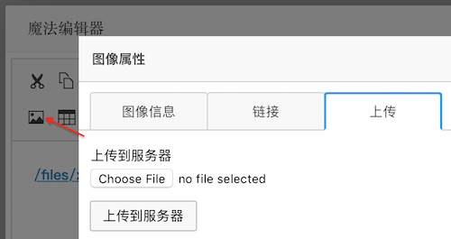
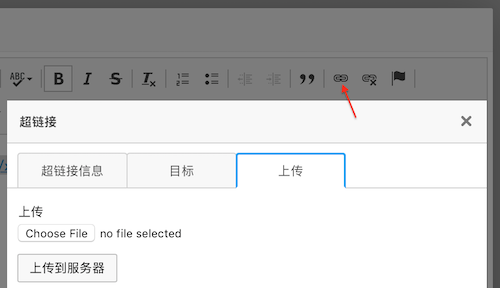

CKEditor 是一个非常优秀的 Web 服文本编辑器，提供了非常多的功能和丰富的文档
Constantly leading innovation in the field of rich text editing. Take full control of your content creation process with such unique features as Paste from Word, Advanced Content Filter, widgets, custom HTML formatting and many more.
CKEditor 还有一个很大的优势是它有一个非常强大的插件商店，里面基本都是免费的，推荐 3 个基础，但是很实用的插件：
修改配置 config.js
1 2 3 4 5 6 // 使用上面的几个插件 config.extraPlugins = 'tableresize,preview,colorbutton'; // Simplify the dialog windows. config.removeDialogTabs = 'image:advanced;image:Link;link:advanced;link:target'; config.removePlugins = 'elementspath';
下面将介绍:
集成 CKEditor
设置 CKEditor
对话框中使用 CKEditor
CKEditor 上传图片
CKEditor 上传文件
下载 CKEditor 访问 http://ckeditor.com ，点击 Download ，然后下载，标准版就可以了，大多数时候 LGPL 的免费授权协议即可。
集成 CKEditor 1 2 3 4 5 6 7 8 9 10 11 12 13 14 15 16 17 18 19 20 21 22 23 24 25 26 27 28 29 30 31 32 <!DOCTYPE html > <html > <head > <meta charset ="utf-8" > <title > CKEditor 的使用</title > <script src ="/lib/ckeditor/ckeditor.js" > </script > </head > <body > <textarea id ="editor1" > </textarea > <button onclick ="setContent()" > Set Content</button > <button onclick ="getContent()" > Get Content</button > <script > CKEDITOR.replace('editor1' ); function setContent ( CKEDITOR.instances.editor1.setData('<b>This is for test</b>' ); } function getContent ( var content = CKEDITOR.instances.editor1.getData(); alert(content); } </script > </body > </html >
设置 CKEditor CKEditor 的设置有 2 种方式，全局设置和局部设置。
上面的例子使用默认的配置使用 CKEditor，很多时候满足不了我们的需求，修改 CKEditor 的配置，去修改 ckeditor/config.js 即可，但是这种修改是全局的，所有地方都会受到影响，例如不同页面有可能上传图片的路径应该是不一样的，上传不同类型的文件时上传路径也可能不一样，使用全局的设置就不合适了，这时需要局部的设置 CKEditor，则可以在调用 CKEDITOR.replace('editor') 时传入需要的配置参数，例如:
1 2 3 4 5 6 7 CKEDITOR.replace('editor' , { language : 'zh-cn' , allowedContent : true , removePlugins : 'elementspath' , resize_enabled : false , height : '300px' });
对话框中使用 CKEditor 某些场景下希望能够在弹出的对话框中进行编辑，例如课程列表中，点击课程后弹出一个对话框，在对话框的编辑器中编辑课程信息，而不是新打开一个页面，这里我们使用 Layer 作为弹出对话框。
1 2 3 4 5 6 7 8 9 10 11 12 13 14 15 16 17 18 19 20 21 22 23 24 25 26 27 28 29 30 31 32 33 34 35 36 37 38 39 40 41 42 43 44 45 46 47 <!DOCTYPE html > <html > <head > <meta charset ="utf-8" > <title > CKEditor 的使用</title > <script src ="/lib/ckeditor/ckeditor.js" > </script > </head > <body > <div id ="editor-box" style ="display: none; padding: 5px;" > <textarea id ="editor" > </textarea > </div > <button id ="show-editor-button" > 弹出编辑器</button > <script src ="http://cdn.bootcss.com/jquery/1.9.1/jquery.min.js" > </script > <script src ="http://cdn.staticfile.org/layer/2.3/layer.js" > </script > <script > CKEDITOR.replace('editor' ); $('#show-editor-button' ).click(function (event ) showEditorDialog(); }); function showEditorDialog ( layer.open({ type : 1 , title : '魔法编辑器' , closeBtn : false , content : $('#editor-box' ), area : ['700px' , '400px' ], shadeClose : false , btn : ['保存' , '取消' ], btn1 : function ( layer.closeAll(); }, btn2 : function (e ) } }); } </script > </body > </html >
点击按钮 弹出编辑器 看到 CKEditor 显示在了 Layer 中，但是不能在里面编辑，点击全屏，Source 等按钮控制台报错:
TypeError: undefined is not an object (evaluating ‘this.document.getWindow().$.getSelection’)
但是，如果这个弹出层使用 Bootstrap 的 Dialog 的话，就没有任何问题，可能是和 Layer 的实现有关吧，不过没关系，Layer 中的问题我们也能搞定: layer.open() 的 success() 函数中创建 CKEditor 实例，如果已经存在，则先销毁然后再创建。
layui.layer 的帮助文档: http://www.layui.com/doc/modules/layer.html
success() 是层弹出后的回调方法。
1 2 3 4 5 6 7 8 9 10 11 12 13 14 15 16 17 18 19 20 21 22 23 24 25 26 27 28 29 30 31 32 33 34 35 36 37 38 39 40 41 createCkeditor('editor' ); function showEditorDialog ( layer.open({ type : 1 , title : '魔法编辑器' , closeBtn : false , content : $('#editor-box' ), area : ['700px' ], shadeClose : false , btn : ['保存' , '取消' ], btn1 : function ( var content = CKEDITOR.instances.editor.getData(); alert(content); layer.closeAll(); }, btn2 : function (e ) }, success : function ( createCkeditor('editor' ); } }); } function createCkeditor (name ) var editor = CKEDITOR.instances[name]; if (editor) { editor.destroy(true ); } CKEDITOR.replace(name, { language : 'zh-cn' , allowedContent : true , removePlugins : 'elementspath' , resize_enabled : false , height : '300px' }); }
CKEditor 上传图片 在上面的基础上点击上传图片按钮，可以看到上传图片的对话框在 Layer 下面，这是因为 Layer 的 z-index 默认是 19891014，而上传图片层的 z-index 是 10000，所以只要修改 Layer 的 z-index 小于 10000 就能显示正常了，在 open() 函数传参数 zIndex: 1000 即可。
图片上传的对话框没问题了，但是发现没有上传图片的选项，只有图像信息 和链接 2 个标签页。要显示出上传图片的标签页也只是一个配置的问题，只要给 CKEditor 配置 filebrowserImageUploadUrl 为上传图片的地址即可：

1 2 3 4 5 6 7 8 9 10 11 12 13 14 15 16 17 18 19 20 21 22 23 24 25 26 27 28 29 30 31 32 33 34 35 36 37 38 39 40 41 function showEditorDialog ( layer.open({ type : 1 , title : '魔法编辑器' ,[1 ] closeBtn : false , content : $('#editor-box' ), area : ['700px' ], shadeClose : false , zIndex : 1000 , btn : ['保存' , '取消' ], btn1 : function ( var content = CKEDITOR.instances.editor.getData(); alert(content); layer.closeAll(); }, btn2 : function (e ) }, success : function ( createCkeditor('editor' ); } }); } function createCkeditor (name ) var editor = CKEDITOR.instances[name]; if (editor) { editor.destroy(true ); } CKEDITOR.replace(name, { language : 'zh-cn' , allowedContent : true , removePlugins : 'elementspath' , resize_enabled : false , height : '300px' , filebrowserImageUploadUrl : '/ckeditor-upload-image' }); }
服务器端接收图片使用参数 upload ，并且还有一个回调的函数名的参数 CKEditorFuncNum ，服务器端需要返回的是一段 <script>，上传完成后 CKEditor 会调用这一段 <script> 例如设置刚才上传的图片到设置框中，或则弹出上传错误信息。
1 2 3 4 5 6 7 8 9 10 11 12 13 14 15 16 17 18 19 @PostMapping("/ckeditor-upload-image") @ResponseBody public String ckeditorUploadImage (@RequestParam("upload") MultipartFile file, @RequestParam("CKEditorFuncNum") String funcNumber) System.out.println(file.getOriginalFilename()); String imageUrl = "../img/x.png" ; return String.format("<script>window.parent.CKEDITOR.tools.callFunction(%s, '%s')</script>" , funcNumber, imageUrl); }
这里浏览器端上传图片是不能够限制文件的格式和大小等，需要更好的效果，需要自己实现上传部分 <input> 那里的逻辑，例如替换为 webuploader，服务器端当然也得再判断一次。
CKEditor 上传文件 上面配置 filebrowserImageUploadUrl 后实现了上传图片，如果需要上传普通文件，然后在 Editor 中呈现为一个链接，需要配置 filebrowserUploadUrl ，这样就会在创建超链接的窗口中出现上传文件的标签页：

1 2 3 4 5 6 7 8 9 10 11 12 13 14 15 16 17 18 function createCkeditor (name ) var editor = CKEDITOR.instances[name]; if (editor) { editor.destroy(true ); } CKEDITOR.replace(name, { language : 'zh-cn' , allowedContent : true , removePlugins : 'elementspath' , resize_enabled : false , height : '300px' , filebrowserUploadUrl : '/ckeditor-upload-file' , filebrowserImageUploadUrl : '/ckeditor-upload-image' }); }
1 2 3 4 5 6 7 8 9 10 11 12 13 14 15 16 17 18 19 20 @PostMapping("/ckeditor-upload-file") @ResponseBody public String ckeditorUploadFile (@RequestParam("upload") MultipartFile file, @RequestParam("CKEditorFuncNum") String funcNumber) System.out.println(file.getOriginalFilename()); System.out.println("FuncNumber: " + funcNumber); String fileUrl = "/files/x.rar" ; return String.format("<script>window.parent.CKEDITOR.tools.callFunction(%s, '%s')</script>" , funcNumber, fileUrl); }
如果仔细观察，会发现服务器端 ckeditorUploadFile() 和 ckeditorUploadImage() 的实现几乎完全一样，返回 <script> 也是一样的，可以把它们合成一个，通过参数区别是上传图片还是上传文件，例如 /ckeditor-upload?type=file 和 /ckeditor-upload?type=image 。
filebrowserUploadUrl，filebrowserImageUploadUrl 和 filebrowserFlashUploadUrl 有什么区别？
可以参考一下帮助文档:
filebrowserFlashUploadUrl
The location of the script that handles file uploads in the Flash dialog window. …
filebrowserImageUploadUrl
The location of the script that handles file uploads in the Image dialog window. …
filebrowserUploadUrl
The location of the script that handles file uploads. If set, the Upload tab will appear in the Link , Image , and Flash dialog windows.
到此为止，CKEditor 的介绍应该能满足百分之八十的需求了，如果想更深度的使用 CKEditor，就需要仔细的阅读帮助文档了 http://docs.cksource.com/Main_Page 。
也许有人要问我，你为啥这么崇洋媚外，不使用百度的 UEditor 或则 UMEditor？不更简单吗？帮助文档还是中文的呢！确实尝试过，但是它们的图片和文件上传弹出对话框在弹出层中显示不全（打开看看 Dom 结构就明白为啥了）和在弹出对话框中全屏编辑时有问题而放弃。